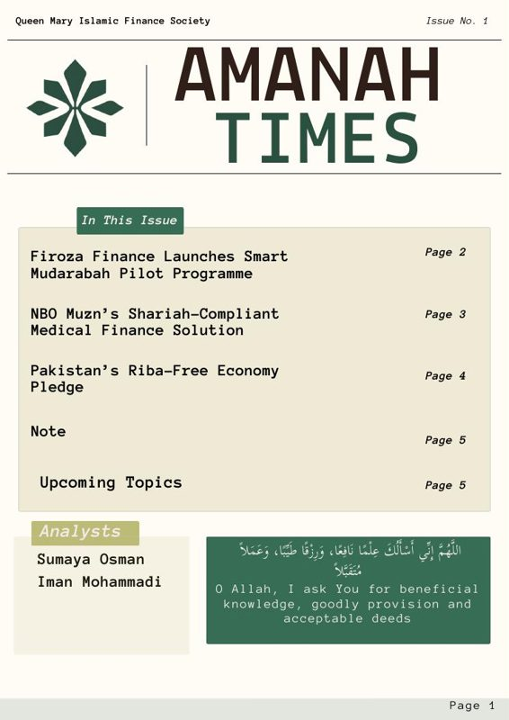
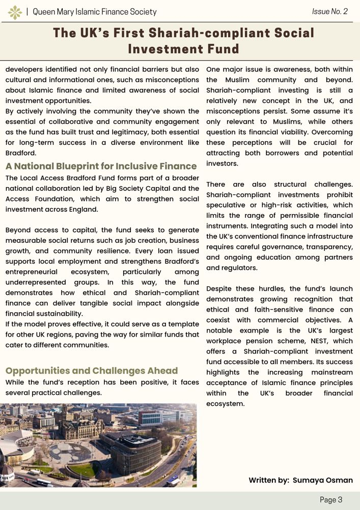
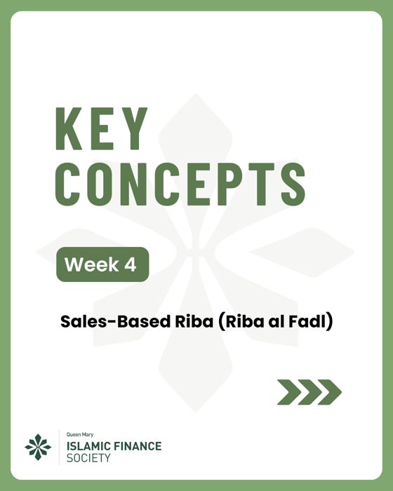
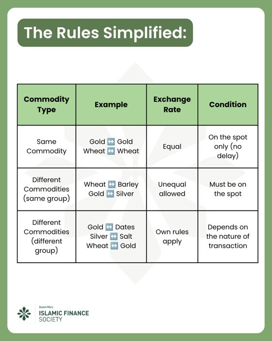
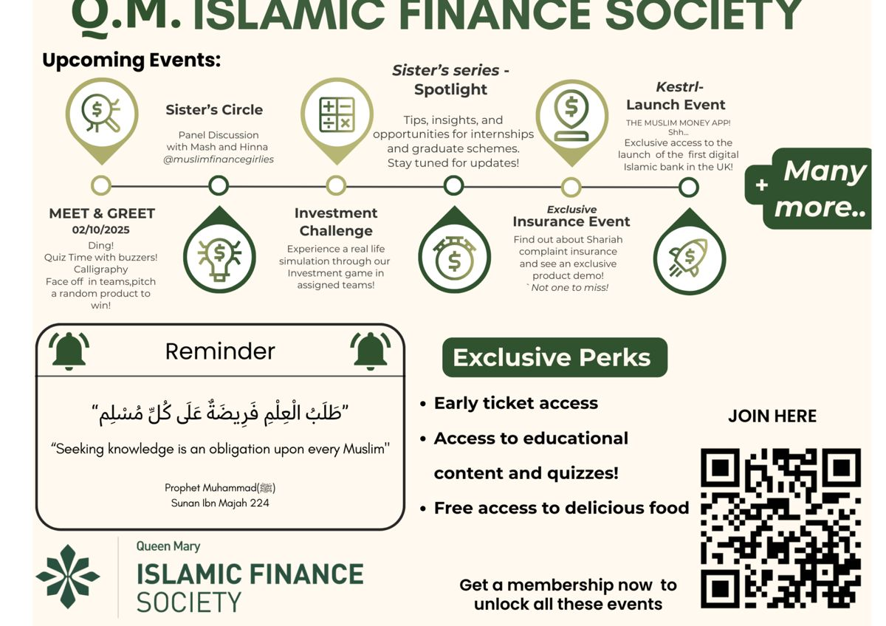
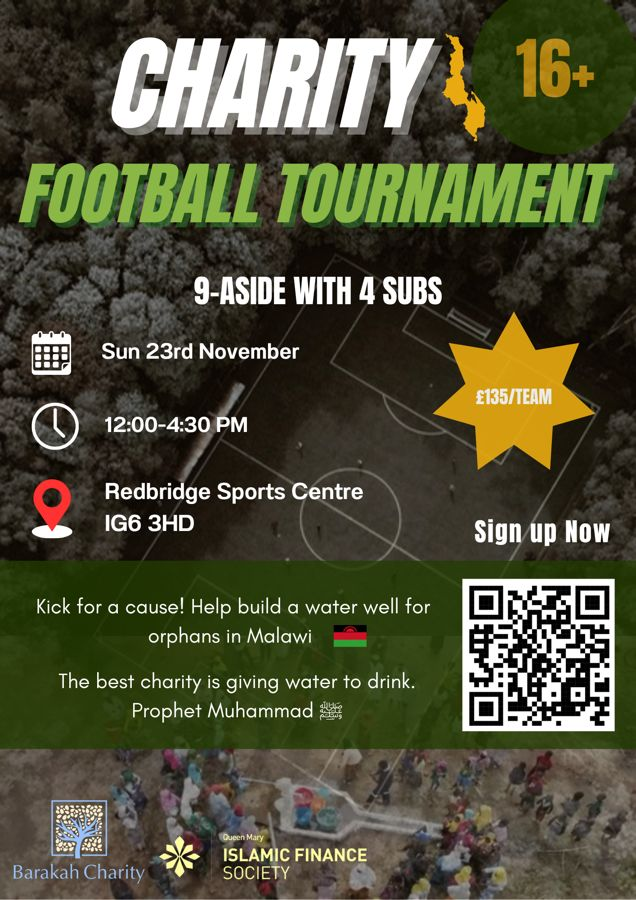

01
Queen Mary Islamic Finance Society
Head Analyst · September 2024 to June 2026 · LinkedIn and the Amanah Times newsletter
I ran the society's LinkedIn and led the analyst team behind our newsletter, Amanah Times. We made Issue 1 together as a team.
- Led the society's data work: our analyst wrote the engagement report, I edited it, and we used it to shape what we posted next.
- The key finding: written, educational posts drew almost 4× the engagement of video at similar reach, so we put written content first.
- Wrote the Issue 1 lead story, Shattering the Ceiling, about the UK's first Shariah-compliant social investment fund.
- Co-led a charity campaign across our channels.
What happenedFollowing grew 129% year on year to more than 1,000, with 15.17% engagement on impressions against a 4.5% platform average. The charity campaign raised £2,000+ in three days. I was nominated for Student Union RAG Contributor of the Year.











